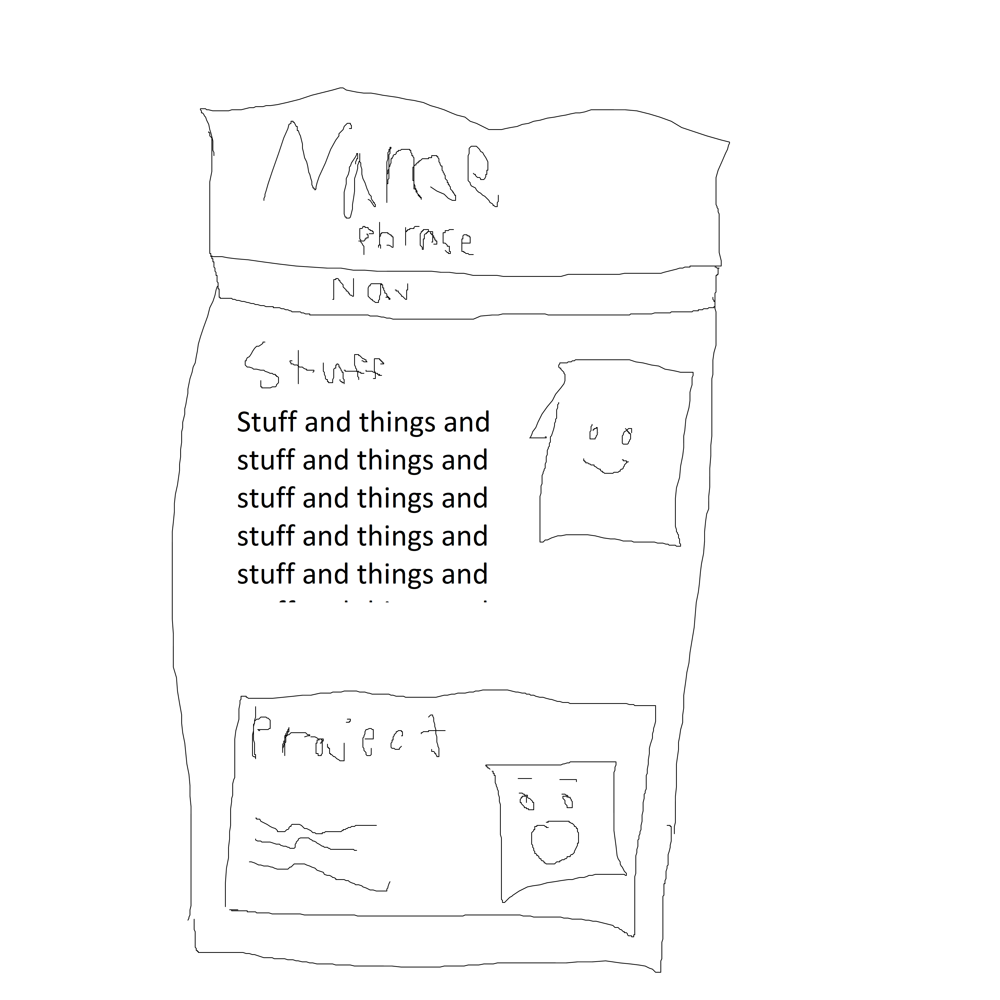

Notes about the design proscess
I don't have any actual projects to show off, so my goal was to stand out with my professionalism and personality. I tried to make my introduction personable and my site sleak.
I ddidn't feel a need to clutter up my portolio too much. I just wanted to get my main message across and then jump right into my projects, so I had the essentials of a header, an introduction paragraph, and the project gallery. I also added a navbar. It wasn't essential since the page isn't huge, but it would be more useful once I start adding more and more projects and also it lends itself to my goal of making the page feel professional and high quality.
Originally, I had my contact info in the footer, but I only had 2 links (my email and my resume) and it was awkward to fit it on the horizontal line and make it look nice, so instead I got rid of the footer alltogether and put the contact info in the navbar.
I started with a basic sketch of the layout. I didn't really know where to start making things though so I just started writing the intro and that got my gears starting to turn. I added my headshot to the side. I originally had it floating, but that got really finicky so instead I put the intro and the picture into a div and made it a flexbox. I continued with this for the project sections as well. If I get to the point that I need to have multiple pictures for a project and display them in a collum, then I'll need to change this probably. I also would need something else for displaying larger pictures if I needed to. Either that would be with Java, making a larger version appear when you click on it, or having a different type that takes up more of the screen (I just hard coded the picture in this documentation)
Original Drawing
Sources for stuff I didn't make